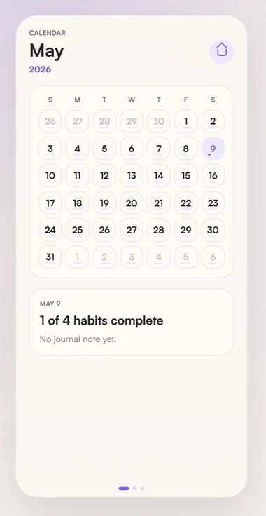
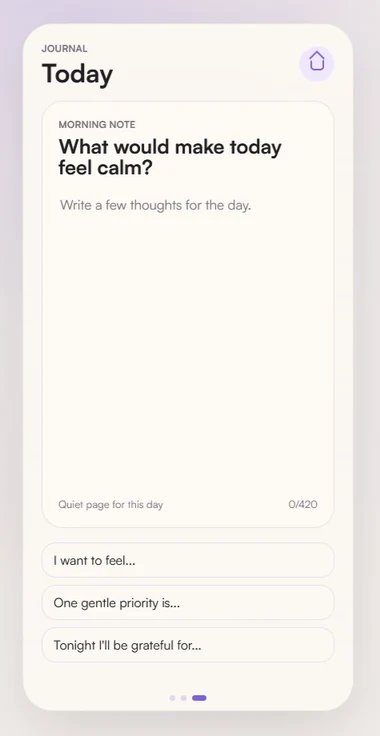

02 / PRODUCT THINKING
Tend.
A calmer daily habit.
Interface & interaction design · Personal product

One day at a time.
01 / 02I designed Tend around a simple daily rhythm: notice a habit, mark the moment, and reflect without turning every day into a score.


Calm is a design decision.
02 / 02Soft colour, clear hierarchy and space between actions keep the habit, rather than the interface, at the centre.
The browser demo is an adaptation of the interface and interactions; the full case study covers the iOS project.
TAKE A CLOSER LOOK
Try the browser demo Full case study ↗Next pocket storyWayfarer →